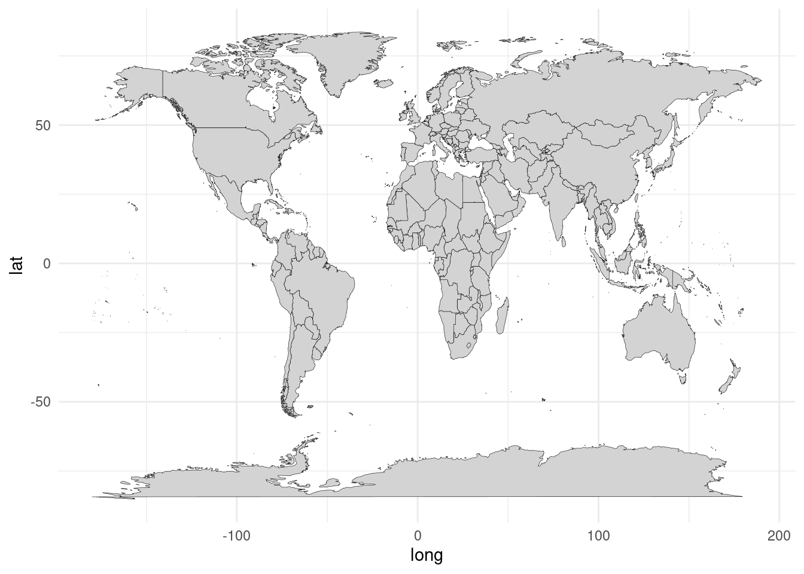
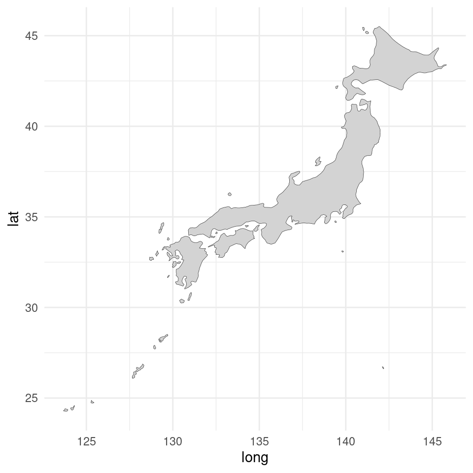
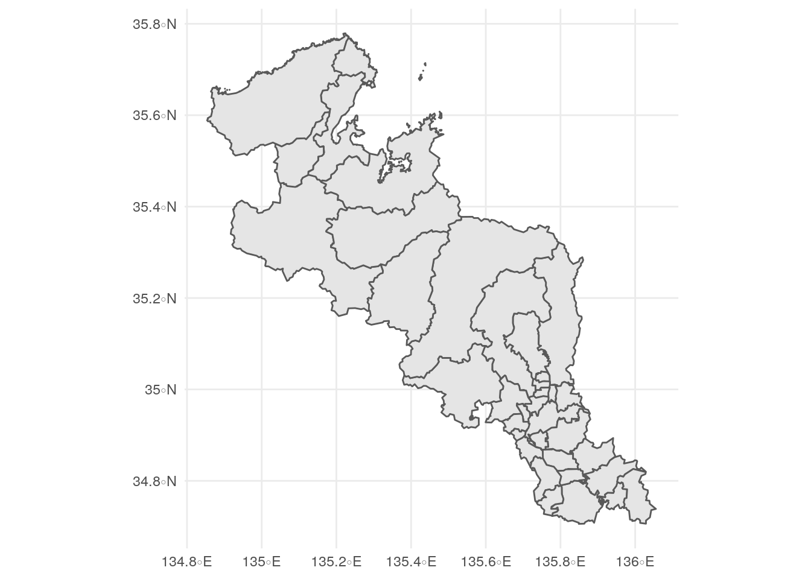
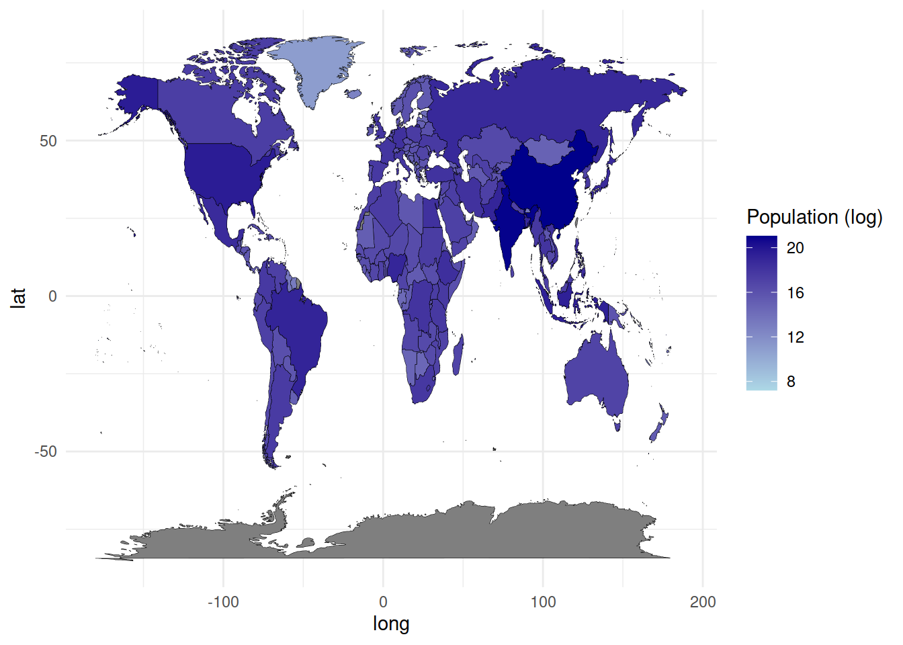
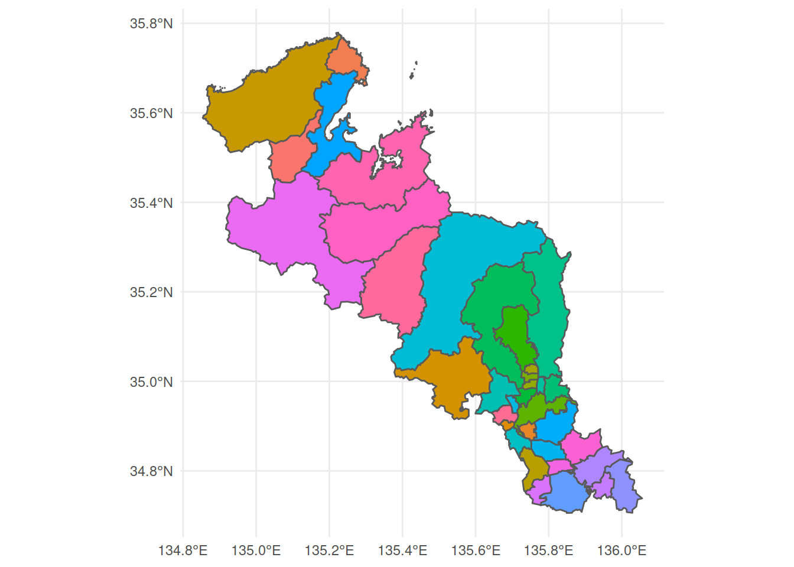
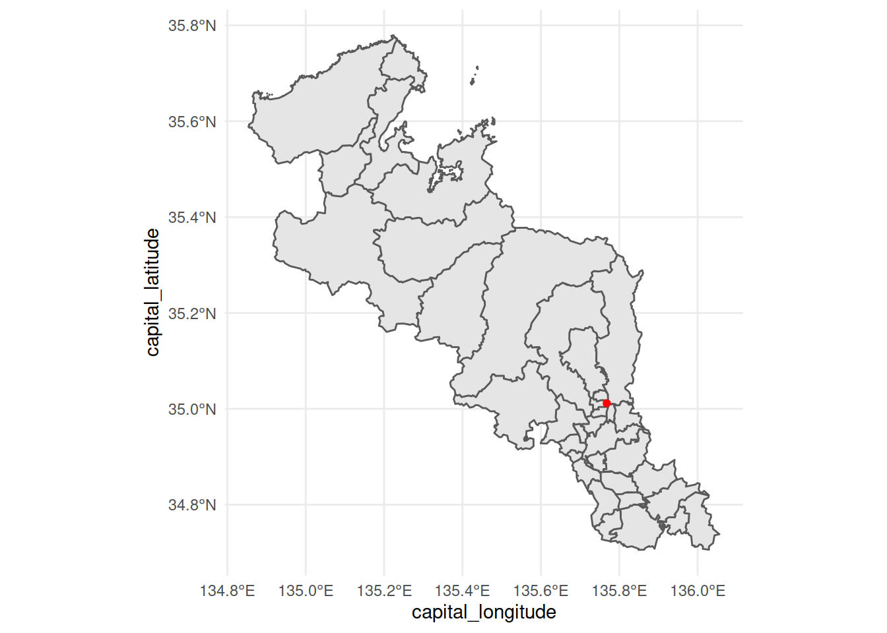
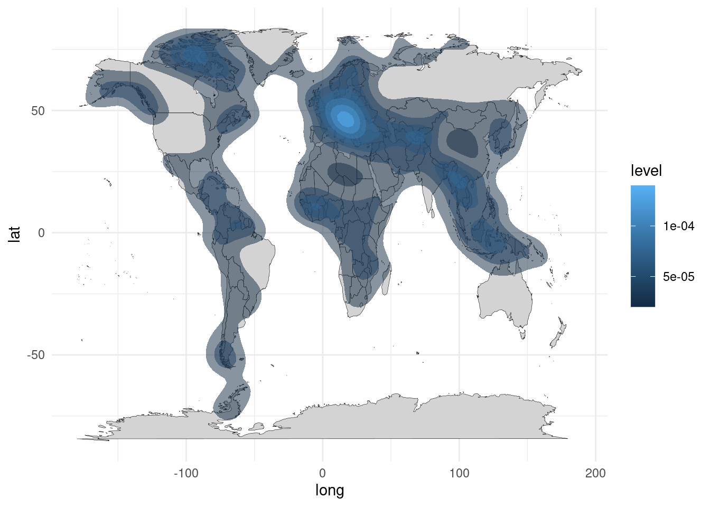
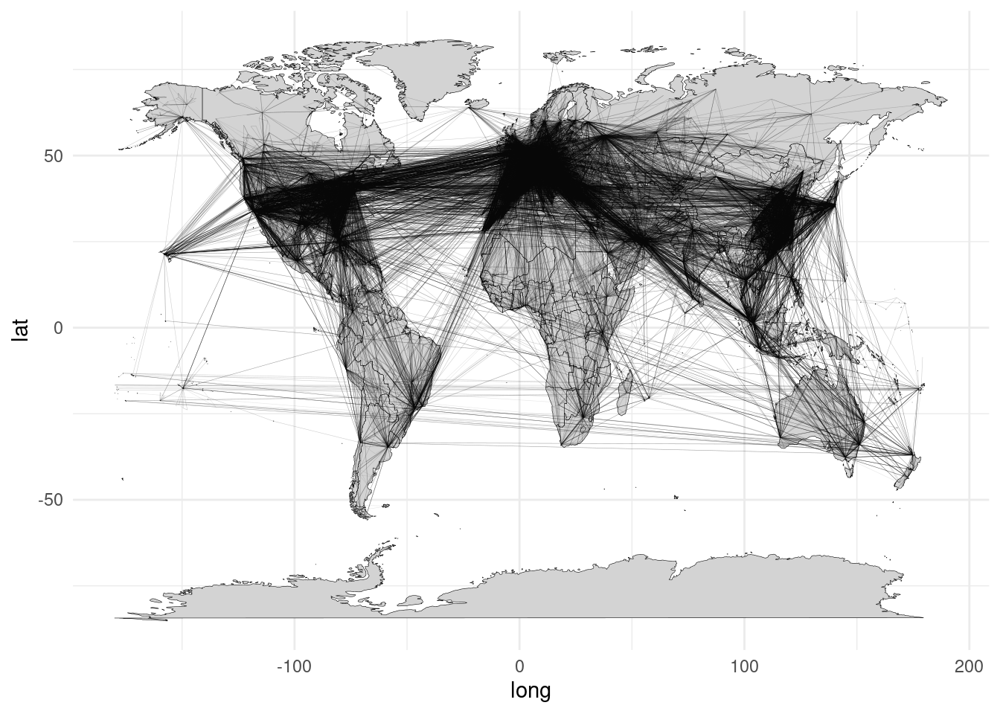
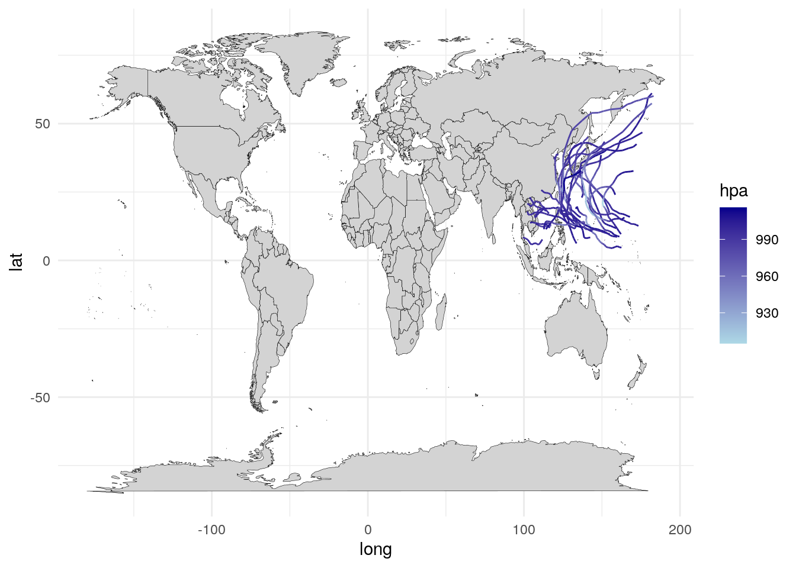

第13章 地図のグラフ
##
## Attaching package: 'maps'## The following object is masked from 'package:purrr':
##
## map## This package provide map data is based on the Digital Map 25000 (Map
## Image) published by Geospatial Information Authority of Japan (Approval
## No.603FY2017 information usage <https://www.gsi.go.jp>)mapsは世界地図情報のパッケージです。- 読み込むとコンフリクトを起こして
purrr::map()が使えなくなるので気をつけて下さいー
- 読み込むとコンフリクトを起こして
jpndistrictは都道府県地図情報のパッケージです。countrycodeは国名を統一するパッケージです。
なお、（2021年1月25日現在）jpndistrictはCRANから外されていますので、どうしてもインストールしたい方はgithubのリポジトリより直接インストールして下さい。
13.1 地図
13.1.1 世界地図
まず、世界地図のデータを呼び出します。
mapパッケージには世界、アメリカ、フランス、イタリア、ニュージーランドのデータが入っています。
こんな感じで緯度、軽度、グループ、地域などの情報が入っています。
境界線が緯度経度でgeom_polygon()で描くことができます。
world %>%
ggplot(aes(x = long, y = lat, group = group)) +
geom_polygon(fill = "lightgray", colour = "black", size = 0.1)## Warning: Using `size` aesthetic for lines was deprecated in ggplot2 3.4.0.
## ℹ Please use `linewidth` instead.
## This warning is displayed once every 8 hours.
## Call `lifecycle::last_lifecycle_warnings()` to see where this warning was generated.
- 国境を描くために、
groupで指定しています。
13.1.2 日本地図
もちろん、filter()でデータを限定すれば、一部の国の地図を描くこともできます。
world %>%
filter(region == "Japan") %>%
ggplot(aes(x = long, y = lat, group = group)) +
geom_polygon(fill = "lightgray", colour = "black", size = 0.1)
13.1.3 都道府県地図
残念ながら、mapパッケージには国レベルの情報しかありません。
## [1] "Afghanistan" "Albania" "Algeria" "American Samoa"
## [5] "Andorra" "Angola"都道府県の地図を描きたい場合はjpndistrictというパッケージを使用します。
パッケージ付属のjpnprefsに都道府県一覧が存在します。
都道府県データを引っ張るにはjpn_pref()に該当する都道府県の数字を入力します。
今回は市区町村の境界線がsimple features (sf)と呼ばれる規格なので、geom_sf()を使います。

13.2 地域の違い
地域ごとの違いを見るために、色を塗り分けたいともいます。
tidyrの中にpopulationというWHOの人口データがあります。
2013年時点の人口データを取り出します。
populationでは国名がcountryですが、worldではregionなので、rename()で後者に合わせます。
先程のデータとworldをマージして、aes()の中のfillで塗り分けする変数を指定します。
それぞれのデータセットで国名が異なっているので、coutnrycodeというパッケージでISOコードに合わせます。
- 千葉大奈先生にご指摘いただきました。
pop2013 <- pop2013 %>%
mutate(iso3c = countrycode(sourcevar = region, origin = "country.name", destination = "iso3c"))
world <- world %>%
mutate(iso3c = countrycode(sourcevar = region, origin = "country.name", destination = "iso3c"))## Warning: There was 1 warning in `mutate()`.
## ℹ In argument: `iso3c = countrycode(sourcevar = region, origin = "country.name", destination =
## "iso3c")`.
## Caused by warning:
## ! Some values were not matched unambiguously: Ascension Island, Azores, Barbuda, Bonaire, Canary Islands, Chagos Archipelago, Grenadines, Heard Island, Kosovo, Madeira Islands, Micronesia, Saba, Saint Martin, Siachen Glacier, Sint Eustatius, Virgin Islandsleft_join(world, pop2013, by = "iso3c") %>%
ggplot() +
geom_polygon(aes(x = long, y = lat, group = group, fill = log(population)),
colour = "black", size = 0.1) +
scale_fill_continuous(name = "Population (log)", low = "lightblue", high = "darkblue")
geom_sf()でも同じです。

13.3 空間の分布
地図上に点を打つ場合はgeom_point()を使うだけです。
mapsパッケージの中にworld.citiesというデータセットがあるので、各国の都市を表示します。
world %>%
ggplot() +
geom_polygon(aes(x = long, y = lat, group = group),
fill = "lightgray", colour = "black", size = 0.1) +
geom_point(aes(x = long, y = lat, alpha = pop/10000),
size = 0.1, data = world.cities)
- ただし、地図データとは別のデータセットのはずなので、別途指定する必要があります。
geom_sf()の場合も同様にできます。
kyoto %>%
ggplot() +
geom_sf() +
geom_point(aes(x = capital_longitude, y = capital_latitude),
colour = "red", data = jpnprefs %>% filter(prefecture == "京都府"))また、geom_density_2d()で2次元の分布を描くこともできます。
試しに、都市の分布を示します。
world %>%
ggplot() +
geom_polygon(aes(x = long, y = lat, group = group),
fill = "lightgray", colour = "black", size = 0.1) +
geom_density_2d(aes(x = long, y = lat),
data = world.cities)
- 一般的には、
geom_contour()で等高線を描くことができます。
色をつけることもできます。
world %>%
ggplot() +
geom_polygon(aes(x = long, y = lat, group = group),
fill = "lightgray", colour = "black", size = 0.1) +
stat_density2d(aes(x = long, y = lat, fill = stat(level)),
geom = "polygon", alpha = 0.5) ## Warning: `stat(level)` was deprecated in ggplot2 3.4.0.
## ℹ Please use `after_stat(level)` instead.
## This warning is displayed once every 8 hours.
## Call `lifecycle::last_lifecycle_warnings()` to see where this warning was generated.
13.4 データの繋がり
13.4.1 二点間の繋がりを見る
データポイントを打った後は、それぞれを線で繋ぎたいのが人情だと思います。
geom_segment()を使うと、始点と終点のx軸とy軸の値を決めると線を引いてくれます。
まず、準備としてOpenFlightsから世界の空港と航路のデータを取得し、結合させます。
airports <- read_csv("data/airports.dat", col_names = FALSE) %>%
select(id = X1, lat = X7, long = X8)## Rows: 7698 Columns: 14
## ── Column specification ─────────────────────────────────────────────────────────────────────────────────
## Delimiter: ","
## chr (10): X2, X3, X4, X5, X6, X10, X11, X12, X13, X14
## dbl (4): X1, X7, X8, X9
##
## ℹ Use `spec()` to retrieve the full column specification for this data.
## ℹ Specify the column types or set `show_col_types = FALSE` to quiet this message.route <- read_csv("data/routes.dat", col_names = FALSE) %>%
select(source_id = X4, dest_id = X6) %>%
mutate_all(as.numeric)## Rows: 67663 Columns: 9
## ── Column specification ─────────────────────────────────────────────────────────────────────────────────
## Delimiter: ","
## chr (8): X1, X2, X3, X4, X5, X6, X7, X9
## dbl (1): X8
##
## ℹ Use `spec()` to retrieve the full column specification for this data.
## ℹ Specify the column types or set `show_col_types = FALSE` to quiet this message.## Warning: There were 2 warnings in `mutate()`.
## The first warning was:
## ℹ In argument: `source_id = .Primitive("as.double")(source_id)`.
## Caused by warning:
## ! NAs introduced by coercion
## ℹ Run `dplyr::last_dplyr_warnings()` to see the 1 remaining warning.df_flight <- route %>%
left_join(airports %>%
rename(source_id = id, source_lat = lat, source_long = long),
by = "source_id") %>%
left_join(airports %>%
rename(dest_id = id,dest_lat = lat, dest_long = long),
by = "dest_id") %>%
filter(!(source_long == dest_long & source_lat == dest_lat))source_longとsource_latが出発地の緯度経度、dest_longとdest_latが到着地の緯度経度を示しています。
それを世界地図の上に重ねてプロットします。
world %>%
ggplot() +
geom_polygon(aes(x = long, y = lat, group = group),
fill = "lightgray", colour = "black", size = 0.1) +
geom_segment(aes(x = source_long, y = source_lat, xend = dest_long, yend = dest_lat),
size = 0.1, alpha = 0.1,
data = df_flight)
- 太平洋を横断する路線も西回りになってしまうのは課題です……
geom_curve()で曲線になります。
13.4.2 経路を見る
二点間を繋ぐのではなく、一連の経路を描きたい場合は、この方法では非効率的です。 例として、2019年の台風の経路をプロットするために、デジタル台風のサイト（例）からデータを収集します。
##
## Attaching package: 'rvest'## The following object is masked from 'package:readr':
##
## guess_encodingdf_typhoon <- tibble()
for (i in formatC(1:28, width = 2, flag = "0")) {
url <- str_glue("http://agora.ex.nii.ac.jp/digital-typhoon/summary/wnp/l/2019{i}.html.ja")
df_typhoon <- bind_rows(df_typhoon,
url %>%
read_html() %>%
html_node("table.TRACKINFO") %>%
html_table(fill = TRUE) %>%
select(long = "経度", lat = "緯度", hpa = "中心気圧 (hPa)") %>%
mutate(id = i))
}このように時系列に緯度経度が並んでいます。
経路の場合はgeom_path()を使います。
world %>%
ggplot() +
geom_polygon(aes(x = long, y = lat, group = group),
fill = "lightgray", colour = "black", size = 0.1) +
geom_path(aes(x = long, y = lat, colour = hpa, group = id),
data = df_typhoon) +
scale_colour_continuous(low = "lightblue", high = "darkblue")
- 複数の経路がある場合は
groupで指定するのを忘れずに。